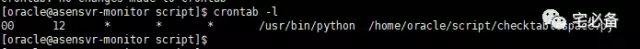

自动化监控Oracle表空间并发送报警
上节讲了如何利用Python连接Oracle数据库并执行语句及发送邮件
其中讲到了利用查看表空间的使用率，这时我们就可以利用Python监控这个数值，等超过阈值后发送邮件通知我们
这节就讲述如何利用Python自动化监控Oracle表空间并在超过阈值的时候发送邮件报警
环境设置
Linux系统为 Centos 6.8
Python环境为 Python 3.6
修改收件人至手机邮箱
修改sendmail脚本收件人至手机邮箱可在手机端收到短信
文件名称:sendmail_phone.py
#!/usr/bin/python
#coding=utf-8
import smtplib
import os
import time
from email.mime.text import MIMEText
to_list=["<13911111111@139.com>"]
mail_host="10.65.1.134" #设置服务器
mail_user="ezio_shi" #用户名
mail_postfix="aseglobal.com" #发件箱的后缀
def send_mail(to_list,sub,content): #to_list：收件人；sub：主题；content：邮件内容
me="<"+mail_user+"@"+mail_postfix+">" #这里的hello可以任意设置，收到信后，将按照设置显示
msg = MIMEText(content) #创建一个实例，这里设置为html格式邮件
msg['Subject'] = sub #设置主题
msg['From'] = me
msg['To'] = ";".join(to_list)
try:
s = smtplib.SMTP()
s.connect(mail_host) #连接smtp服务器
#s.set_debuglevel(1)
s.helo()
#s.starttls()
#s.login(mail_user,mail_pass) #登陆服务器,一般公司内部无需认证
s.sendmail(me, to_list, msg.as_string()) #发送邮件
s.close()
return True
except Exception as e:
print (str(e))
return False
监控Oracle表空间并发送报警信息
文件名称:checktablespace.py
#!/usr/bin/python
#coding=utf8
import cx_Oracle
from sendmail_phone import *
def oraclesql(cursor):
#这里我们使用python的open方法打开文件并读取文件内容作为SQL语句执行
#可使用绝对路径或相对路径
fp=open('/home/oracle/script/tablespace.sql','r')
#fp=open('./tablespace.sql','r')
fp1=fp.read()
cursor.execute(fp1)
data=cursor.fetchall()
return data
if __name__=="__main__":
mailcontent=[]
ipaddress='10.65.1.120'
username='sys'
password='ase_sys_n'
port='1521'
tnsname='dctest'
#这里我们利用Python的异常处理来捕获异常，具体用法请参考文章开始提到的教程
try:
#这里我们使用sysdba权限连接oracle数据库(和上期连接普通用户的不同)
db = cx_Oracle.connect(username+'/'+password+'@'+ipaddress+':'+port+'/'+tnsname ,mode=cx_Oracle.SYSDBA)
except Exception as e:
content= (tnsname+' is Unreachable,The reason is '+ str(e)).strip()
print (content)
else:
cursor = db.cursor()
data=oraclesql(cursor)
cursor.close()
db.close()
#这里我们检查每个表空间使用率是否大于90%，如果是则将一条报警信息加入到mailcontent列表
for i in data:
usage=int(i[4])
if usage>=90:
tablespace=i[0]
mailcontent.append('Be Careful tablespace '+tablespace+' is '+str(usage)+'% Used!')
#这里我们判断mailcontent长度是否为0，不为0说明有超过90%的表空间，然后我们发送邮件
if len(mailcontent) != 0:
content='\n'.join(mailcontent)
send_mail(to_list,' Tablespace usage warnning',content)
设置定时任务
接下来我们要做的就是把他设成自动任务定期执行
如下就是设定每天12点检查一次

运行结果
当有表空间超过阈值即可收到短信
源码位置
代码放在我的github主页，欢迎大家查看
https://github.com/bsbforever/wechat_oms
至此自动化监控Oracle表空间已经讲完，下期编写批量检查多个数据库脚本。